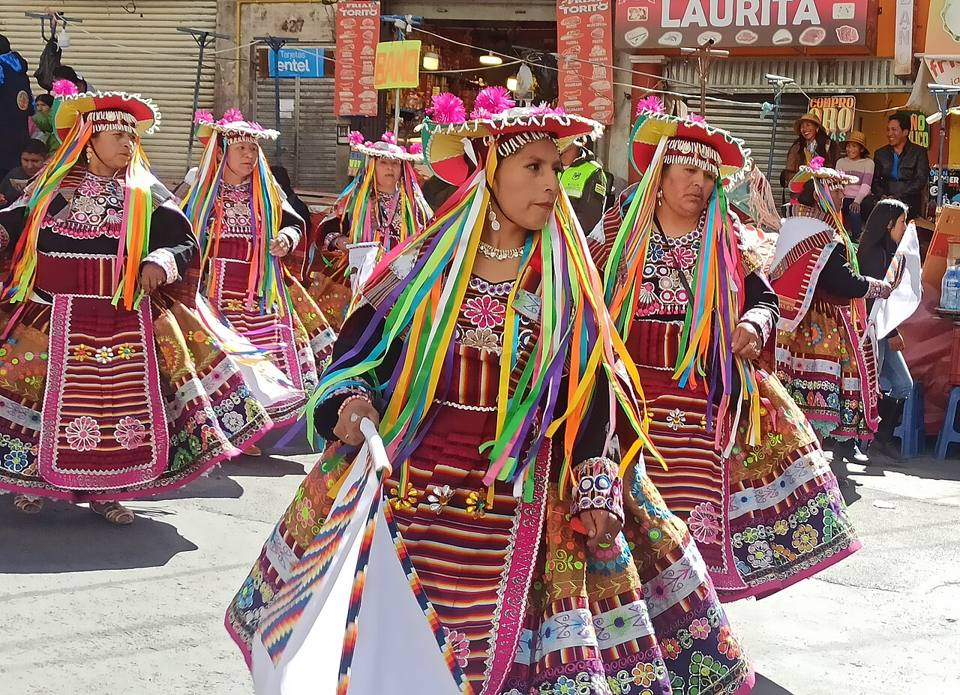
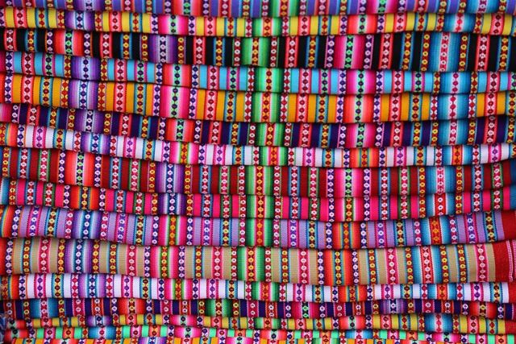
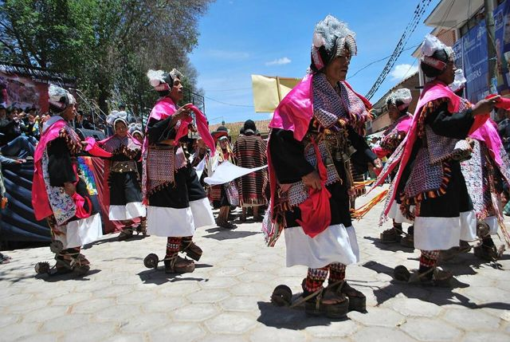
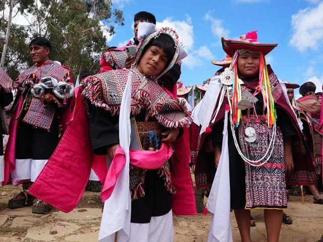
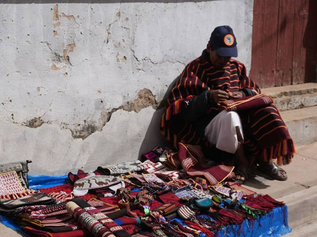
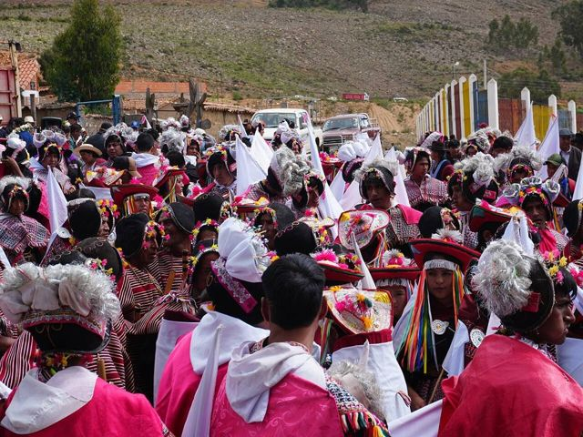
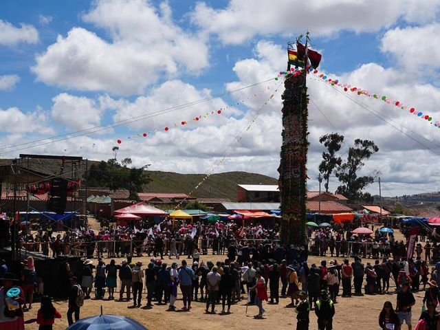

Tarabuco
Departamento de Chuquisaca · Cultura e historia

Cada domingo, las comunidades yampara bajan a Tarabuco para la feria, con su ropa tradicional y sus curiosas monteras de cuero. Ahí se encuentran los mejores tejidos de la región. Una salida muy colorida, ida y vuelta desde Sucre.
3280 maltura
1 díapara quedarse
Qué hacer
- Feria dominical
- Tejidos y trajes tradicionales
- Fiesta del Pujllay (marzo)
Qué comer
Consejo. Ve un domingo, ida y vuelta desde Sucre.
También aquí
- Fiestas · UNESCO Pujllay de TarabucoLas comunidades yampara bajan a Tarabuco con su ropa de fiesta y sus espuelas marcando el ritmo de la danza, para celebrar la cosecha y la victoria de 1816.
- Artesanía y mercados Tejidos yampara de TarabucoTelas con motivos muy finos, a menudo escenas de la vida cotidiana y animales, tejidas a mano en telar. La feria del domingo es el mejor lugar para encontrarlas.
Cómo llegar a Tarabuco
Sucre Carretera (bus, auto) · 1 h 30
Buses turísticos los domingos en la mañana, o minibuses.
Fotos de Tarabuco

.jpg){kind=link}










Otros lugares de la región
 PotosíLa que fue la ciudad más rica del mundo gracias a la plata del Cerro Rico. Patrimonio de la UNESCO.
PotosíLa que fue la ciudad más rica del mundo gracias a la plata del Cerro Rico. Patrimonio de la UNESCO. Casa Nacional de Moneda (Potosí)La ceca real donde la plata del Cerro Rico se volvía monedas, hoy el gran museo de Bolivia.
Casa Nacional de Moneda (Potosí)La ceca real donde la plata del Cerro Rico se volvía monedas, hoy el gran museo de Bolivia. Ojo del Inca (Tarapaya)Una laguna de agua caliente perfectamente redonda, a 30 minutos de Potosí.
Ojo del Inca (Tarapaya)Una laguna de agua caliente perfectamente redonda, a 30 minutos de Potosí. SucreLa «ciudad blanca», capital constitucional: la ciudad colonial más bella del país.
SucreLa «ciudad blanca», capital constitucional: la ciudad colonial más bella del país.- CandelariaPueblo yampara más allá de Tarabuco: antigua hacienda, tejidos y turismo rural.
- ZudáñezPueblo de valle ligado a las guerras de la independencia, al este de Sucre.
 Cráter de MaraguaUn sinclinal gigante en rojos y violetas, con pueblos de tejedores jalq'a.
Cráter de MaraguaUn sinclinal gigante en rojos y violetas, con pueblos de tejedores jalq'a.